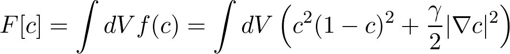
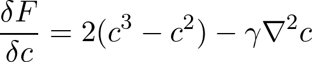
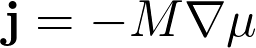
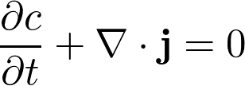
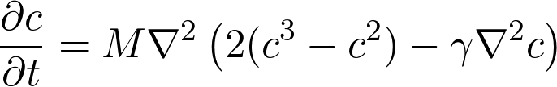

Cahn-Hilliard Equation

The Cahn-Hilliard equation models phase separation between two phases. The free energy density of a two phase mixture is modelled by double-well plus an energy cost for high concentration gradients.
The equation to be solved, is obtained by taking the functional derivative of F with respect to the function c.
The derivative of the free energy with respect to the concentration can be thought of as a chemical potentia. The current j of species is propertional to the gradient of the local chemical potential μ.
where M is the mobility. Since the overall concentration is conserved, we require
By inserting the expression for the currend we finally arrive at the Cahn-Hilliard equation
An example of a solution starting from a random concentration distribution is shown to the right. Formation of odd shaped domains (spinodal decomposition) is a characteristic feature of the solution.